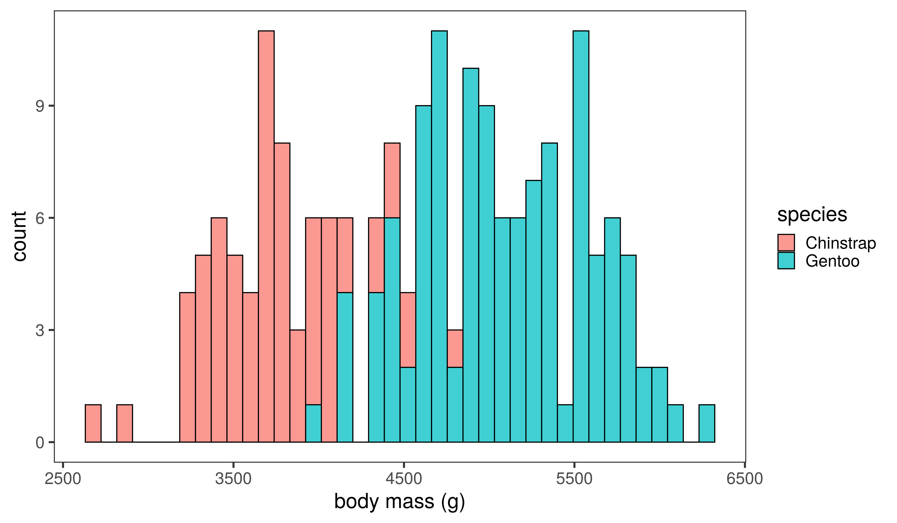
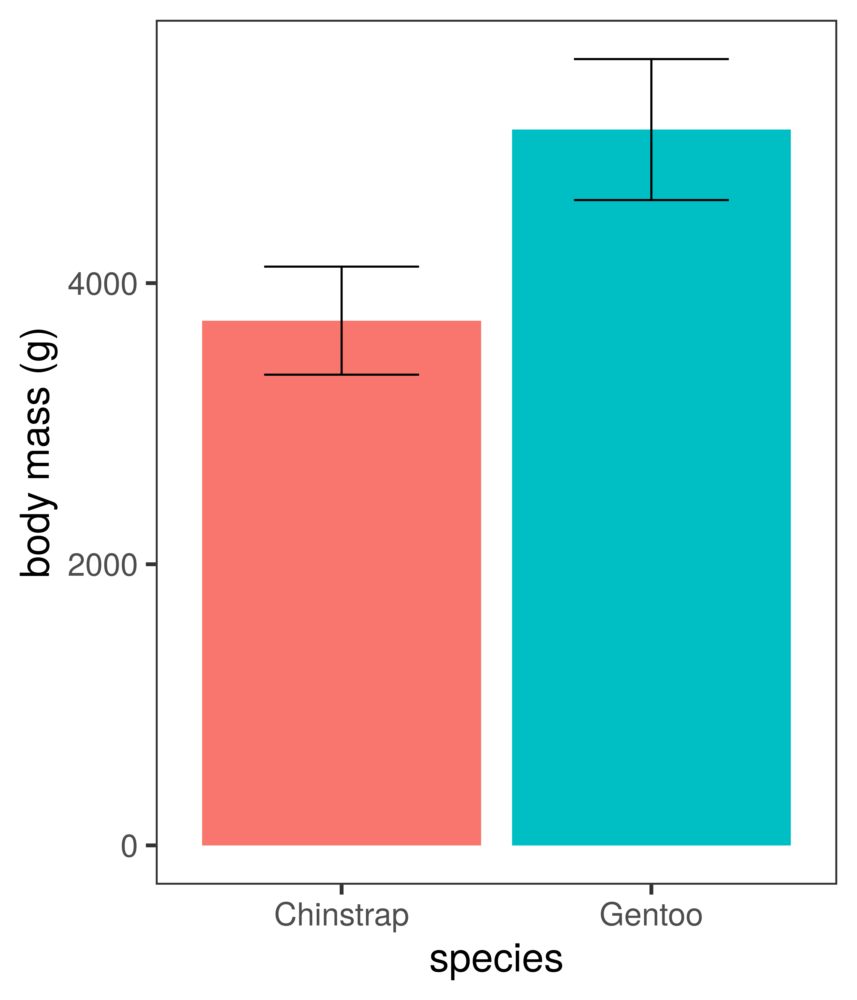
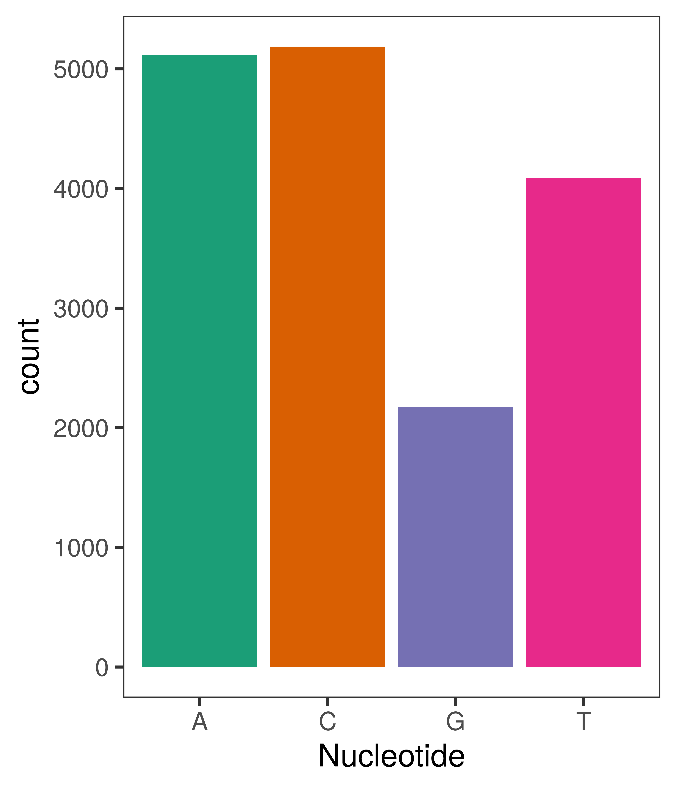
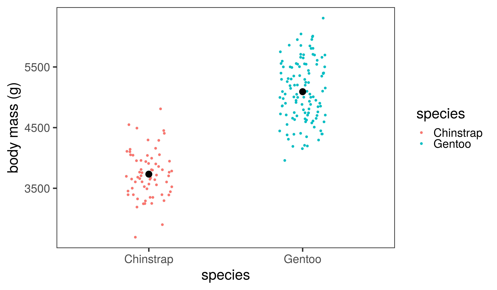
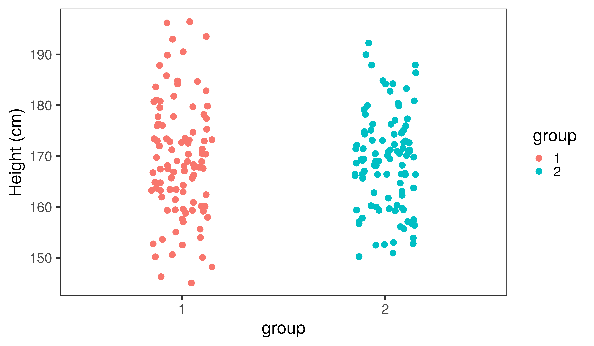
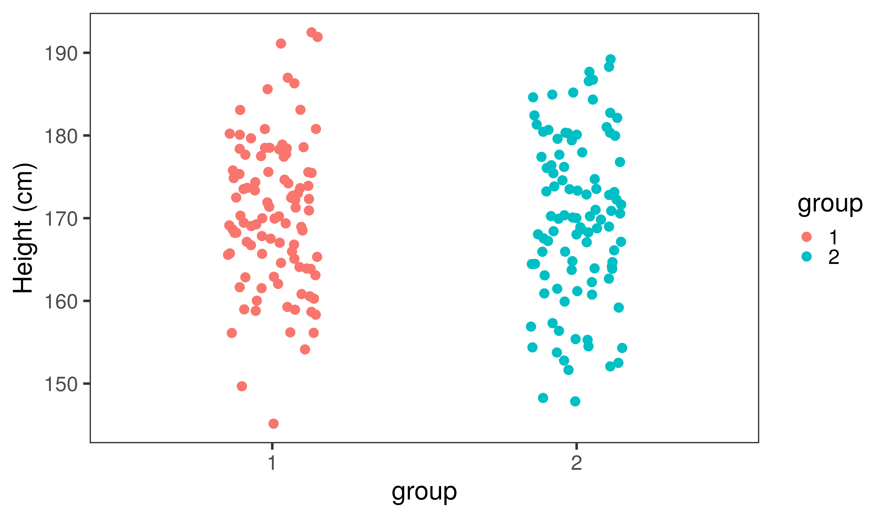
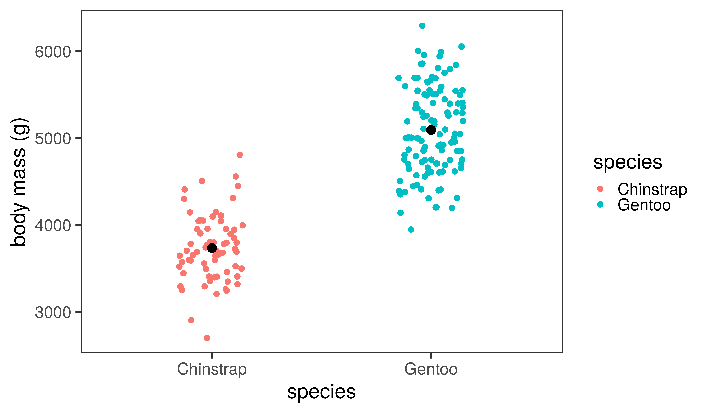

Data Analysis 3
BIOL10272: Practical Techniques
Dr Axel Barlow
email: axel.barlow@ntu.ac.uk
Data analysis 3
- Two variable experimental design
- Visualising two variables
- Hypothesis testing
- p-values and tests of significance
Two variable experimental design
Examples
| Quantitative variable | Categorical variable |
|---|---|
| Number of species | Habitat |
| Blood pressure | Drug test and control groups |
| Number of genes | Free living or parasitic microorganism |
| Disease prevalence | Country |
| Gene expression | Developmental stage |
Penguins
- Body mass: quantitative continuous
- Species: categorical

Chinstrap penguin

Gentoo penguin
Data visualisation

Box plot
- Also know as a box and whisker plot
- The box shows:
- Median (50th percentile)
- lower quartile (25th percentile)
- upper quartile (75th percentile)
- Note upper - lower quartile is the interquartile range
- Whiskers extend to the furthest data point within 1.5 x the interquartile range
- Anything outside this range is an outlier

Barchart
- Species goes on the x axis
- Mean body mass on the y axis
- Error bars often used to display the sample variation
- +/- one standard deviation in this example

Two very different "barcharts"

Showing the data points
Showing the data points

Hypothesis testing
In science we call our questions hypotheses
- A
hypothesis(pluralhypotheses) is a proposed explanation of something - It must be testable
- That means, we can predict different observations if the hypothesis is true or false

We generally split the question into two:
Null hypothesis: there is no effectAlternate hypothesis: there is an effect- We try to reject or disprove the null hypothesis
- Then we can accept the alternate hypothesis

Example: human sex ratio
You hypothesise that the human sex ratio at birth may be slightly different to the 50:50 ratio generally assumed
Predictions
- Null hypothesis: 50% males, 50% females
- Alternate hypothesis: % male and % female are different
Results and conclusions
- The observed percentage turns out to be around 52.5%
- You reject the null hypothesis and accept the alternate hypothesis
- If 50% were observed, then you would fail to reject the null hypothesis
Fail to reject the null hypothesis?
- We used a very specific wording when our observation is consistent with the null hypothesis
- Actually a double negative
- You do not prove the null hypothesis

p-values and tests of significance
Interpreting data can be subjective

- Subtle patterns are easier to see with big sample sizes
- Small sample sizes can give false impressions
A simple example:
- There are two student groups, you hypothesise that one is taller than the other
- Height is a normally distributed continuous quantitative variable
- Null hypothesis: there is no difference in (the distribution of) height between the two groups
- Alternate hypothesis: there is a difference
- You measure 10 students from each group and compare...
Comparison 1

Comparison 2

Comparison 3

Comparison 4

So are the groups different?
All the groups are sampled from the same normal distribution
group1 <- rnorm(10, 170, 10)
group2 <- rnorm(10, 170, 10)
group1
## [1] 163.8797 178.4845 157.7566 171.3462 179.2484 171.1590 163.1358 181.1424
## [9] 177.0127 172.1342
group2
## [1] 173.8838 179.8192 185.9014 180.5571 176.4741 162.1718 156.6791 162.6154
## [9] 175.7260 164.2008
Now let's increase the sample size
Comparison 1

Comparison 2

Comparison 3

Comparison 4

The problem
- Rejecting the null hypothesis can be subjective
- We need a way of doing this mathematically
- Essentially, we want to know:
The probability of observing the data if the null hypothesis is true
This is called a p-value
p-value
- A p-value is a probability
- The probability of observing the data if the null hypothesis is true
- Scales between 0 and 1
- Low values indicate a low probability
- We need some threshold value where we can reject the null hypothesis
- Typically 0.05 or 0.01
- Anything below this is termed
significant, anything above isnon-significant
Students t-test
- A statistical test for quantitative, normally distributed variables
- Compare groups or sample pairs
- Developed in 1908 by William Gosset

Using the t-test
- Null hypothesis: the means of the two groups are equal
- Alternate hypothesis: the means are different
- p-value: probability of observing the data if the means are equal
Assumptions
- the investigated variable is normally distributed
- the groups have equal variance
- but there are ways to get around this
- the samples are independent
Back to our example

- t-statistic = -1.272, degrees of freedom = 198, p-value = 0.205
Penguins

t-statistic = -19.335, degrees of freedom = 185, p-value < 0.01
Data analysis 3
- Two variable experimental design
- Visualising two variables
- Hypothesis testing
- p-values and tests of significance
Next time
Analysis of two quantitative variables